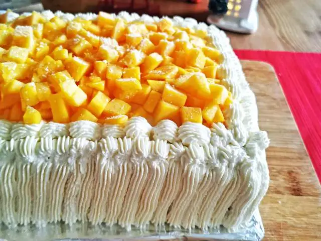

HOME
Mango Cake

Description
This classic vanilla cake is soft, fluffy, and full of rich buttery flavor. Made with simple ingredients like flour, sugar, eggs, and butter, it is perfect for birthdays, celebrations, or as a comforting homemade treat. The cake is best paired with a creamy frosting, fresh fruits, or a dusting of powdered sugar. It’s an easy and foolproof recipe that guarantees a moist and delicious cake every time.
Ingredients
- 2 ½ cups all-purpose flour
- 2 ½ tsp baking powder
- 1 cup unsalted butter, softened
- 2 cups granulated sugar
- 4 large eggs
- 1 tbsp vanilla extract
- 1 cup whole milk
- ½ tsp salt
Directions
- Preheat your oven to 350°F (175°C). Grease and flour two 9-inch round cake pans.
- In a bowl, whisk together the flour, baking powder, and salt.
- In a separate large bowl, cream the butter and sugar until light and fluffy.
- Add the eggs one at a time, beating well after each addition. Mix in the vanilla extract.
- Alternately add the dry ingredients and milk to the butter mixture, beginning and ending with the flour mixture. Mix until just combined.
- Divide the batter evenly between the prepared cake pans and smooth the tops.
- Bake for 25-30 minutes, or until a toothpick inserted into the center comes out clean.
- Let the cakes cool in the pans for 10 minutes, then transfer to a wire rack to cool completely before frosting.